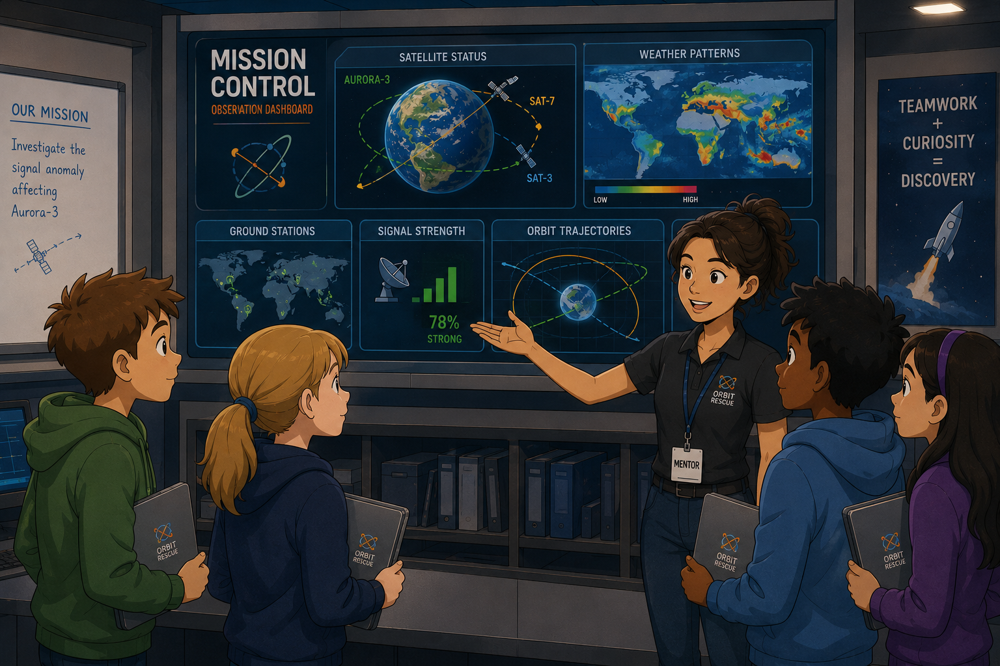
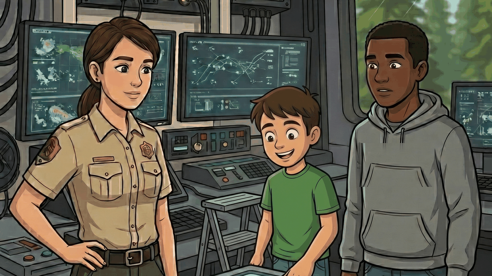

12 interactive lessons
One substantial, story-driven experience for every Grade 5 Arizona science performance expectation, each carrying its NGSS mapping.
Twelve interactive lessons, one for every Arizona Grade 5 science performance expectation, each mapped to its NGSS equivalent. Students take a real role, choose which evidence to pursue, build a model, and explain their reasoning, then export the whole field journal as proof of learning.

Most curriculum bundles technically cover the standards, but you still have to decide what to assign, connect the reading to the activity, explain the task, and judge whether your student actually demonstrated the standard.
Stories in Science does that instructional design work before your student ever opens the lesson.
Students make choices that genuinely change what they investigate. The design guarantees the standard is met no matter which path they take.
Plenty of programs offer "choice" that amounts to picking a colour or an avatar. Others offer open-ended exploration where a student can wander away from the standard entirely. Structured autonomy is the deliberate middle: the branch is real, and the destination is guaranteed.
Deep initial instruction and application, not repetitive worksheets or a daily textbook march.
One substantial, story-driven experience for every Grade 5 Arizona science performance expectation, each carrying its NGSS mapping.
Evidence notes, models, decisions, and written explanations save as a formatted document you can print or keep.
A focused check on whether your student can apply the core ideas of the standard, not just recall them.
Each lesson carries deeper extension tasks for students who finish early or want to push further into the science.
A few purposeful questions that help your student say out loud what they noticed and why the evidence supports it.
Standards map, lesson-at-a-glance pages, answer guidance, pacing options, and a simple progress tracker.
Every story gives a real role, evidence worth weighing, decisions that matter, and an explanation to construct.

Students join an environmental response team, weigh post-fire evidence, model the ecosystem's feedback loops, and recommend recovery actions.

Students investigate a vehicle collision, analyse force-and-motion data, test their own model, and deliver an evidence-based safety recommendation.
Students work as orbital response interns, interpret motion evidence, test competing explanations, and model how an orbit is maintained.
Students become junior genetics investigators, compare family traits across litters, identify inheritance patterns, and explain how information passes to offspring.
Each follows the same design: a meaningful role, embedded instruction, authentic evidence, real student decisions, an exported journal, rigorous extensions, a short quiz, and a brief facilitator debrief.
Stories in Science integrates what students know, what scientists and engineers do, and the patterns of thinking that connect scientific ideas.
Grade-level concepts appear inside a problem that needs them, not as isolated vocabulary or background reading.
Students analyse data, develop and use models, construct explanations, support claims with evidence, and communicate decisions.
Patterns, cause and effect, systems, and stability and change become the tools students use to make sense of evidence.
Most elementary science programs are assembled from activities. This one was built from learning theory outward: the story, the choices, the evidence, and the reflection all do specific work.
Students connect new evidence to what they already know, test ideas, revise their thinking, and construct explanations rather than receive them.
In practice: your student figures it out and writes it down, instead of being told the answer.Meaningful choice supports autonomy. Clear expectations, scaffolds, and feedback support competence. Authentic roles and problems build relatedness.
In practice: the lesson is built to hold attention on purpose, not by adding games.The narrative isn't a reward bolted on after instruction. The problem, evidence, decisions, and consequences are the environment in which the standard is encountered and applied.
In practice: remove the story and the lesson stops working; that's the point.Stories in Science translates research-informed principles into concrete features a fifth grader can actually use.

Doctoral Candidate · Science Educator · Creator of Stories in Science
Stories in Science grew out of doctoral research in Leadership and Innovation at Arizona State University, where the Stories in Science Framework is the subject of a formal dissertation study on fifth-grade engagement and attitudes toward science.
The framework is grounded in constructivist learning theory, Self-Determination Theory, and research on narrative-centered digital learning environments, and is structured around a five-layer Narrative Inquiry Cycle: entry, exploration, sensemaking, application, and reflection. Every lesson in this program is built on that cycle, and every lesson was designed, coded, and classroom-tested by the same person who wrote the research behind it.
Read the one-page overview: the standard, the time needed, the student product, and any materials.
The lesson teaches and applies the content while guiding your student through evidence and decisions — 60 to 75 minutes, on their own.
Save the completed field journal to a portfolio, a learning record, or a classroom collection.
Run the short quiz and use the debrief prompts to reinforce the reasoning that matters most.
A full year of core science instruction — twelve lessons, extensions, assessments, and facilitator materials — without assembling it yourself from hundreds of separate pages.
Available to families, co-ops, schools, and districts.
Planned price for a single license. Final access terms will be published before enrollment opens.
Co-op, school, and district pricing is set by learner count and access type.
Each lesson is designed for 60 to 75 minutes of asynchronous student work. Some learners move faster, some slower, and the lesson saves progress so it can be split across two sittings. Rigorous extension tasks are built in for students who finish early or want to go deeper.
Yes. The complete program provides core instruction and application for all 12 Grade 5 Arizona science performance expectations, with Science and Engineering Practices and Crosscutting Concepts embedded rather than tacked on.
Yes. Every lesson is built on an Arizona performance expectation and carries a mapped NGSS performance expectation alongside it, and you get a full crosswalk listing both. One thing to know: Arizona and NGSS place some topics in different grades. Heredity, for example, is Grade 5 in Arizona and Grade 3 in NGSS. The science and the rigor are the same — the sequence differs — so the alignment guide includes separate pacing suggestions for each framework.
No, and that's deliberate. Stories in Science delivers deep, three-dimensional instruction on each standard plus rigorous extensions, rather than daily worksheets. Most families run one lesson per week or two across the year and add reading, experiments, and field experiences around it.
Stories in Science is secular. Lessons teach science through evidence and reasoning, aligned to Arizona and NGSS standards, and cover topics such as heredity, ecosystems, and physical science as they appear in those standards. The program doesn’t include religious content and doesn’t take a position on matters of faith — those conversations are left to your family.
No. The lesson carries the instruction. You get a concise preview, response guidance, quiz information, and a few debrief questions — enough to have a good conversation about the science without teaching it yourself.
A formatted field journal containing their evidence notes, the path they chose, their models, their written explanations, and their reflections. It exports as a document you can print, file, or add to a portfolio or learning record.
Any modern browser on a Chromebook, laptop, or tablet. Work is saved in the browser on the student's own device, so a stable connection matters most at the start and end of a lesson.
Each license covers one student. Household and multi-student options are being finalised and will be stated clearly before enrollment opens.
Yes. Group licenses are priced by learner count and the type of access needed. Get in touch and we'll talk through what fits your setting.
Generative AI tools were used to support development of the instructional materials, including illustration. The instructional design, the standards alignment, the science content, and the research framework are the author's own work as part of doctoral study.
Join the interest list for development updates, pilot opportunities, and first word when enrollment opens.
This site is ready for a ConvertKit, MailerLite, Formspree, Google Form, or Thinkific enrollment link. Add your URL to SITE_CONFIG.interestListUrl near the bottom of this file.
Use this for co-op, school, and district enquiries. Add your contact-form or mailto URL to SITE_CONFIG.licensingContactUrl near the bottom of this file.
Privacy, terms, and refund pages are required before you can take payment. Create them as separate pages and point these footer links at them.